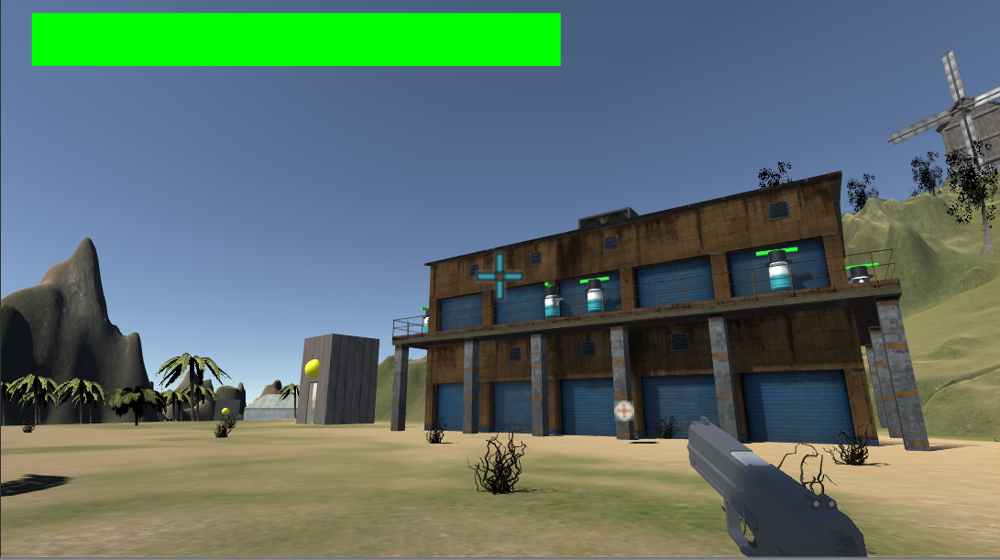
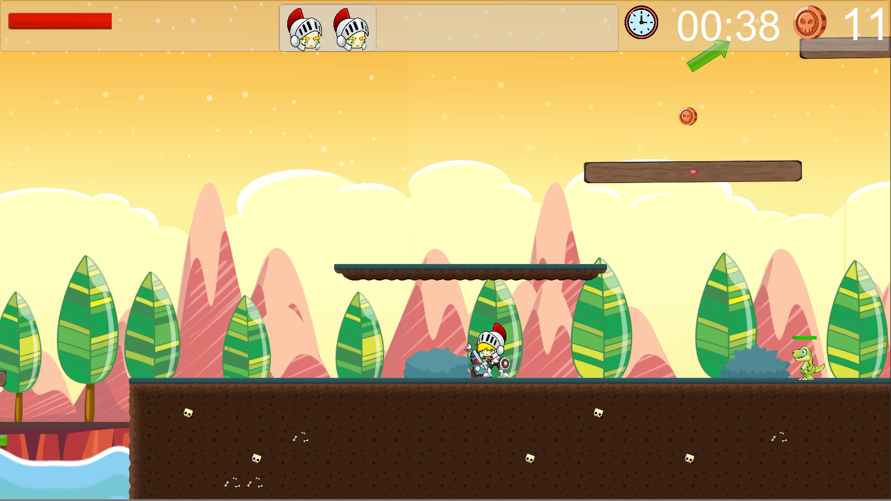

Pese a no haber publicado nada, el clicker es sólo uno de los muchos proyectos que he hecho en Unity. Esta es una lista de los que me vienen a la mente:
- Call of cice: es lo primero que hice que puede ser llamado juego. Era un shooter en primera persona, donde los enemigos eran cápsulas y tenías que destruir sus spawners, conseguir 3 tipos de arma diferentes y matar al menos 10 de ellos para poder acceder a la lucha contra un jefe. El jefe tenía varias fases, que consistían básicamente en esquivar sus ataques y matarle. 
- CiceVania: Aquí aprendí cómo funcionan los juegos 2d en unity e hice un juego de estilo metroidvania. Constaba de 2 niveles aunque el contenido era fácilmente ampliable. El escenario estaba montado con tilemaps. Había varios tipos de enemigos, powerr ups, obstaculos, plataformas... 
- Call of cicegear: Juego de infiltración imitando el estilo metal gear. Con control point and click usando la inteligencia artificial de unity. Sólo podías disparar 3 balas, y hacías ruido al caminar y disparar, lo que alertaba a los enemigos. Podías agacharte y esconderte detrás de ciertos objetos. Los enemigos usan ragdolls. Cinemáticas usando timelines. El personaje montado con IK para llevar su arma. Luces optimizadas, etc...
- Rodents Factory: Este juego consistía en completar un par de puzzles sencillos y matar unos enemigos para enfrentarte al jefe: un topo malvado. La gracia del juego es que imité la pistola antigravedad de half life 2. Podías disparar y coger y lanzar objetos con ella, y los objetos que lanzabas hacían daño a los enemigos.
Entre todos estos desarrollos también hay proyectos más pequeños, como hacer distintos tipos de shaders con el shader graph, un juego online de tanques, otro juego online tipo agar.io, uno de realidad virtual en el que podías, entre otras cosas, escalar. Uno en realidad aumentada estilo pokemon (usando vuforia), etc...